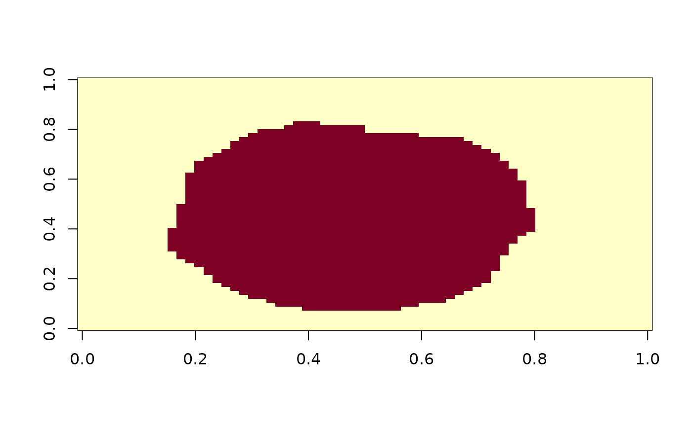

This function applies an isotropic discrete Gaussian kernel to smooth a volumetric image (3D brain MRI data). The blurring is performed within a specified image mask, with customizable kernel parameters.
Usage
gaussian_blur(
vol,
mask,
sigma = 2,
window = NULL,
normalize = TRUE,
fwhm = NULL,
truncate = 4
)Arguments
- vol
A
NeuroVolobject representing the image volume to be smoothed.- mask
An optional
LogicalNeuroVolobject representing the image mask. This mask defines the region where the blurring is applied. If not provided, the entire volume is processed. It must have the same dimensions asvol.- sigma
A single finite positive number specifying the standard deviation of the Gaussian kernel in the spatial units of the image (millimetres for a typical NIfTI), not voxels. The kernel is evaluated in physical distance using
spacing(vol), so the samesigmaproduces the same physical smoothing regardless of voxel size. Default is 2; ignored whenfwhmis given.- window
Kernel half-width in voxels: the number of voxels included on each side of the centre, so
window = 1is a 3x3x3 kernel.NULL(the default) derives it fromsigma,truncate, and the voxel spacing, using the largest half-width over the three axes so no axis is clipped early. Supplying a number instead truncates the kernel there, which can under-smooth — see Details. A window larger than the volume is clamped tomax(dim(vol)), which changes no result: every kernel tap that far out is out of bounds from every voxel.- normalize
A logical value controlling how the mask boundary is handled. When
TRUE(the default), the blur is insulated to the mask: each in-mask output voxel is computed from in-mask neighbours only and the kernel is renormalized by the in-mask weight (a "smooth-in-mask" convolution, cf. AFNI3dBlurInMask). Out-of-mask values — finite or not (includingNaN/Inf) — never influence in-mask outputs, and edge voxels are not biased toward the mask exterior. WhenFALSE, the legacy behavior is used: the full kernel is applied with zero padding outside the volume and out-of-mask neighbour values are read into the convolution (retained only for backward compatibility).- fwhm
Full width at half maximum of the kernel in the image's spatial units, the form in which smoothing is usually specified. Supplying it sets
sigmatofwhm / (2 * sqrt(2 * log(2))); giving both is an error.- truncate
How many standard deviations of the Gaussian to keep when
windowis derived. Default 4, matchingscipy.ndimage.gaussian_filter. Smaller values are faster and smooth less than requested.
Value
A NeuroVol object representing the smoothed image.
Details
The function uses a C++ implementation for efficient Gaussian blurring. The blurring is applied only to voxels within the specified mask (or the entire volume if no mask is provided).
Kernel width. A Gaussian has infinite support, so it has to be cut off somewhere, and
where it is cut off changes the smoothing that is actually applied. window is measured
in voxels while sigma is in millimetres, so a fixed window truncates at a
different point on every acquisition. The old default of window = 1 cut a
sigma = 2 mm kernel off at one standard deviation on 2 mm voxels and delivered 3.5 mm
FWHM where 4.7 mm was asked for — and 1.9 mm on 1 mm voxels. Leaving window = NULL
derives it from sigma instead, so the smoothing you ask for is the smoothing you get:
| call | delivered | requested | shortfall |
sigma = 2, window = 1 | 3.49 mm | 4.71 mm | 26% |
sigma = 4, window = 1 | 3.76 mm | 9.42 mm | 60% |
sigma = 4 (derived) | 9.42 mm | 9.42 mm | 0% |
Passing window explicitly still truncates exactly as before, so old calls are
reproducible; it is only the default that changed.
Units. sigma is in the spatial units of the image (millimetres for typical
NIfTI data), not voxels: neighbour offsets are multiplied by spacing(vol) before
the kernel is evaluated. window, by contrast, is a half-width counted in voxels. Mixing
the two is the easy mistake — converting an FWHM to sigma in voxels and passing that as
sigma silently under-smooths, with no error or warning. To smooth to a target FWHM:
fwhm_mm <- 6
sigma_mm <- fwhm_mm / (2 * sqrt(2 * log(2))) # ~2.55 mm
window <- ceiling(3 * sigma_mm / mean(spacing(vol))) # cover +/- 3 sigma, in voxels
gaussian_blur(vol, mask, sigma = sigma_mm, window = window)window must be large enough to contain the kernel: because the kernel is truncated at
window voxels, a window much smaller than 3 * sigma_mm / spacing clips the
Gaussian tails and delivers less smoothing than sigma implies.
With the default normalize = TRUE, smoothing a masked statistical map (e.g. a first-level
fMRI coefficient map written as NaN outside the brain) within its brain mask preserves the
full in-mask coverage; out-of-mask NaNs do not erode the masked region and the renormalized
edge values match the interior on their shared support.
Examples
# Load a sample brain mask
brain_mask <- read_vol(system.file("extdata", "global_mask_v4.nii", package = "neuroim2"))
# Apply Gaussian blurring to the brain volume
blurred_vol <- gaussian_blur(brain_mask, brain_mask, sigma = 2, window = 1)
# View a slice of the original and blurred volumes
image(brain_mask[,,12])

image(blurred_vol[,,12])
# Smooth to a target FWHM. `sigma` is in millimetres, so convert FWHM -> sigma
# in mm (NOT voxels); `window` is a voxel half-width sized to cover +/- 3 sigma.
fwhm_mm <- 6
sigma_mm <- fwhm_mm / (2 * sqrt(2 * log(2)))
window <- ceiling(3 * sigma_mm / mean(spacing(brain_mask)))
smoothed <- gaussian_blur(brain_mask, brain_mask, sigma = sigma_mm, window = window)